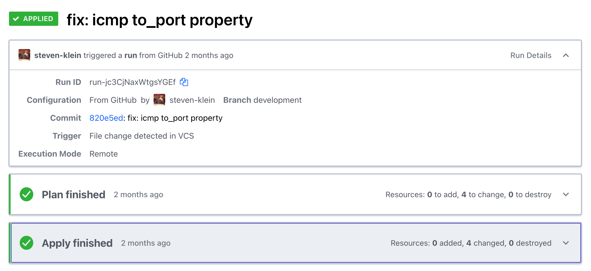

DevOps and Tools
Building a strong toolset for efficient development has been paramount for my career and is something that I'm constantly refining and improving.
Containers, Infrastructure as Code, and Blue/Green Deployments
When I first started working at Ars Technica most of our infrastructure was managed by a third party using VMware vSphere, with a static number of application servers up at all times. This was okay, but it didn't give us a way to dynamically scale the number of application servers based on traffic, which is great for maintaining a quality of service for your users and saving on infrstructure costs when traffic is light. It also left us with a panick inducing deployment method orchestrated by a build server that swapped out the code base on each node while it was actively receiving traffic. Finally, managing each server had to be done manually, taking it out of the cluster to run updates before putting it back in. It required a lot of oversight from a small development team that really needed to be more focused on the codebase. After making the decision to containerize the individual applications we had a new opportunity to reimagine the infrasructure we needed, reconsider how we'd want to manage that infrastructure, and to completely redesign our deployment strategy.
We didn't really have a choice in using AWS as the provider, but with what it offered us it was the clear choice. Our containerized apps could be deployed on Fargate with auto scaling policies that scaled-in and out based on the traffic we were receiving at the Application Load Balancer, the database and cache clusters could be managed easily with Aurora Serverless and ElastiCache, and our object store of course could use S3. Beyond that we'd also be making use of ECS, EC2, ElsticSearch, CloudFront, ParameterStore, Lambda, CodeBuild, CodePipeline, CodeDeploy, WAF and more. Plus, with ECS, CodeDeploy, and Application Load Balancer we were able to design my favorite feature of this new stack: Blue/Green Deployments.
With all of those peices of the puzzle determined now we needed to understand how best to manage it. It was clearly too many services to manage just through the web console and ideally we'd have a history of changes and wanted to be able to duplicate the entire stack for a 1-to-1 staging environment, enter Terraform. With Terraform's declarative language we can understand what the application infrastructure is composed of with out ever needing to open the web console. Our changes are tracked in a Git repository making it easy to understand why things changed or roll back as needed and we have a staging stack that is as close to 1-to-1 with our production environment as you can get. Using a tagging convention that includes the environment meant we could easily name and tag each resource we created by environment.
locals {
project_name = "arx"
env = lower(var.workspace)
name_prefix = "${local.project_name}-${local.env}"
common_tags = {
Project = local.project_name
Environment = local.env
Terraform = "true"
}
}
/**
* APPLICATION LOAD BALANCER
*/
resource "aws_lb" "web_apps_alb" {
name = "${local.name_prefix}-public-alb"
tags = merge(local.common_tags, { Name = "${local.name_prefix}-web-apps-public-alb" })
}

Highlights
All told we had 190 different resources at work for each environment. You'd think that would have meant we'd need a dedicated DevOps specialist to keep track of all of those resources, but containerized apps on AWS services managed by Terraform left us feeling really good about maintaining our infrastructure while continuing to contribute to the application codebase ourselves. To top it all off we reduced our infrastructure costs by 50%.
Tags Terraform, DevOps, AWS
CLI AWS Secrets Management
The AWS Systems Manager Parameter Store is a great tool for storing and providing secrets to applications. It works especially well with containerized applications launched on AWS Fargate where you can define the path to the secrets necessary for the apps environment through the launchspec template. Managing those secrets through the AWS console though can be a little cumbersome and make setting up local environments a complicated process. There are some solid CLI tools already out there for this, Segmentio/Chamber being the best, but at Ars Technica we were managing a lot of secrets for multiple applications and environments with a custom naming convention that just didn't quite work with Segmentio/Chamber. I also wanted import/export capabilities based on the .env format since most PHP applications manage local environment secrets that way. Using the Yargs, AWS-SDK, and Dotenv packages from NPM I was able to create a Chamber clone that had everything we needed, nothing we didn't, and could be used in future applications.
Highlights
Having unique command line tools at your teams disposal saves time and energy. They're realtively easy to compose and distribute using Node.js.
Tags Node, CLI, Scripts, DevOps
# get help arguments wrapped in <> are required, [] are optional
$ arx-chamber --help
# get a single parameter store value <workspace> <app> <key>
$ arx-chamber get development acta DB_HOST
# set a single parameter store value <workspace> <app> <key> <value>
$ arx-chamber set development acta DB_HOST localhost
# delete a single parameter store value <workspace> <app> <key>
$ arx-chamber delete development acta DB_HOST
# list all parameters by path [workspace] [app] note: this is recursive, leave out [app] then [workspace] in that order to move up the path
$ arx-chamber list development acta
$ arx-chamber list development
$ arx-chamber list
# export that list to a json file
$ arx-chamber list development acta > output.json
# export to .env <workspace> <app> [filepath]
$ arx-chamber export development acta output.env
# import from a .env file <workspace> <app> [filepath]
$ arx-chamber import development acta import.env
Frontend Assets Boilerplate
Modern front-end development requires an effective method for compiling, processing, and minifying assets. After working with many CSS pre and post processors, JS bundlers, minifiers, task runners, and modules of all sorts, I've found NPM scripts that make direct calls to various modules to be the best all around method for bundling assets. Typically, I use PostCSS with cssnext for style development and Rollup.js + Buble for JavaScript (when I'm not using a reactive JS framework) and BrowserSync for live updating, leveraging the proxy feature for applications that have dynamic backend programming. I'm a huge fan of Yarn for handling my package dependencies to guarantee any developers collaborating on a project are using the same version of each module.
{
"scripts": {
"build": "npm-run-all --serial clean --parallel copy js css",
"dev": "npm run watch",
"clean": "npm-run-all --serial clean:**",
"clean:build": "del-cli build",
"deploy:prod": "cross-env NODE_ENV=production npm run build && project-sync production up",
"deploy:stage": "cross-env NODE_ENV=production npm run build && project-sync staging up",
"copy": "npm-run-all --parallel copy:**",
"copy:img": "cpx \"src/img/**/*.{jpg,gif,png,svg}\" build/img",
"css": "postcss -c postcss.config.js",
"js": "rollup -c rollup.config.js",
"postversion": "git push && git push --tags",
"serve": "browser-sync start -c browsersync.config.js",
"test": "cross-env NODE_ENV=production npm run build",
"watch": "npm-run-all build --parallel \"js -- --watch\" \"css -- --watch\" \"copy:img -- --watch\" serve"
}
}
# install dependencies with yarn
$ yarn
# build
$ npm run build
# dev
$ npm run dev
Highlights
NPM Scripts are easy to write, can be given aliases that are intuitive for devlopers and chained together for a very effective workflow. Gulp and Grunt are great, but I often wonder if the additional layer is really necessary. An easy way to help developers adapt to using NPM scripts, is to create aliases in existing processes for task runners like build: gulp or dev: gulp watch.
Tags
NPM Scripts, PostCSS, cssnext, JavaScript, Rollup.js, Buble, CPX, BrowserSync, npm-run-all
Project Sync
I remember trying to FTP my files to the server. I even remember editing live files via FTP, boy how the times have changed. I created Project Sync, so I could stop fumbling around with rsync from the command line and instead quickly push my changes up to any number of servers with a simple command project-sync production up.
I'm hoping to continue development of this module and have been designing a version 2 that will transition to ES2015 syntax and include a few new features.
{
"servers": {
"production": {
"host": "user@example.com",
"path": "/var/www/vhosts/some/path",
"exclude": [".env"],
"delete": true
},
"staging": {
"host": "user@example.com",
"path": "/var/www/some/path",
"exclude": [],
"delete": true
}
},
"excludeGlobal": ["project-sync.json", ".git", "node_modules"]
}
# deploy to production server
$ project-sync production up
# deploy to staging server
$ project-sync staging up
Highlights
Project Sync is easy to integrate into any existing workflow, or can be installed globally to be used as needed throughout project directories. With the security of SSH, and the speed at which rsync works pushing up changes in environments that can handle a fraction of a second of potential downtime, this has become an extremely effective way for me to deploy projects.
Tags
Node.js, rsync, deployment
Stage CLI/Stage Templates
Organization and clarity is important when you want to work in collaborative environments, and initiating projects is the best place to start with production in mind. Too often developers use the cumbersome process of cloning a repo only to remove the history in order to start with some boilerplate or scaffolding for a project. What's worse, is the README and name properties in files like package.json don't make sense for the project. I found Vue.js' command line utility for starting Vue based projects to be an awesome way to start projects, so I forked it and start every project big or small using a series of templates for my most common project types. The end result is a project that has a minimum README necessary for other developers to get involved, plus any number of properties, scaffolding, scripts, and tests in place for creating real production ready projects.
# Start a new wordpress project
$ stage-init bitbucket.org:brkstn/wordposer my-new-site
# Start a new html with handlebars project
$ stage-init html-handlebars my-html-site
Highlights
In addition to the command line tool I've started Stage Templates where I hope to provide a better set of boilerplates for popular frameworks. At my current position, we're already starting all projects with this tool.
Tags
command line, tools, boilerplate, production
Vagrant LAMP Stack
The last MacOS update broke your MAMP stack, now what? Download Virtual Box and Vagrant and never look back. While working at Breakstation Creative I refined the development process with not just a series of workflow tools but also a virtual environment that helps guarantee each developer gets the same results that they should expect from the production environment.
As much as I've readily enjoyed Vagrant I'm looking forward to working with Docker more and more as a portable environment that can stay and be easily adapted for each project.
# Install Virtual Box: https://www.virtualbox.org/wiki/Downloads
# Install Vagrant: http://www.vagrantup.com/downloads
# Add vagrant plugins
$ vagrant plugin install vagrant-hostsupdater && vagrant plugin install vagrant-bindfs
# Clone the repo
$ git clone git@bitbucket.org:organization/vagrant-repo.git ~/Sites/apache.local
# Build
$ cd ~/Sites/apache.local && vagrant up
Highlights
The primary LAMP stack leveraged Apaches VirtualDocumentRoot and DNSmasq in order to easily map any example.dev url to a vhost directory of the same name.
Tags
Vagrant, Virtual Box, LAMP, MAMP